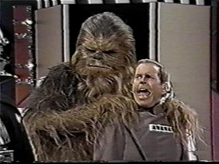
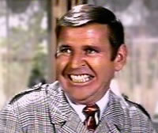
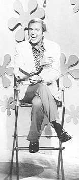
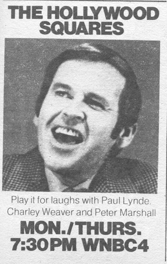
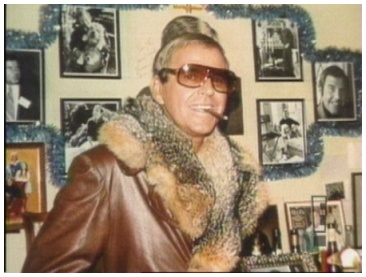
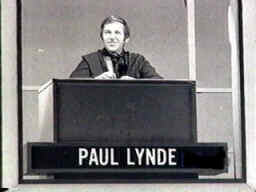
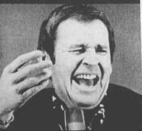
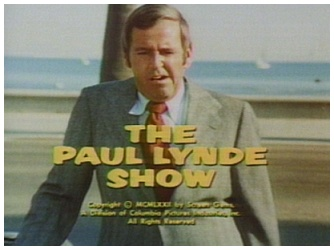
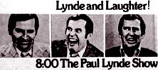
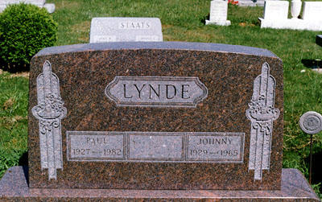

|
Paul Lynde Jun. 13, 1927 - Jan. 10, 1982 Lynde himself is among the gayest celebrities the world has ever known. Chronically cranky, sarcastic and mincing, Lynde's career was also defined by his voice work as Templeton the rat in Charlotte's Web, and as the wisecracking centerpiece on television's Hollywood Squares. During his life he served as comedy writer, nightclub performer, Broadway actor and director, recording artist, and television pitchman. The man who made the world "a safer place for sissies," suffered a number of tragedies -- including a constant battle to control his weight, his whisky, and his depression -- which culminated in an isolated, mysterious death in 1982. Born in Mount Vernon, Ohio, Paul Lynde was one of six children. Encouraged by his high school drama coach, he enrolled at Northwestern University's Speech and Drama School, where in 1948 he was declared Best Student Actor of the Year. His humor was very much inspired by the New Yorker cartoons conceived by Charles Addams. Upon graduation, he pursued an acting career in New York without much success. He survived for four years by waiting tables and selling blood for five dollars a pint. On Thanksgiving day in 1950, Paul won an amateur talent contest which led to his first New York nightclub gig. Other successful club dates followed, and soon he was cast in New Faces of 1952, a hit revue which led to comedy roles in the original stage (and later screen) production of Bye Bye Birdie. Lynde's brother died in the Battle of the Bulge -- one of the coldest, snowiest wars in history, and one of the worst battles in terms of losses to American forces in World War II. The process of recovering his body from the war field and bringing him back for a proper burial in the United States spanned five years, during which time the dead soldier was often mischaracterized as "missing in action". Rather than secure the closure which such recoveries provide, the recovery only opened new wounds. Paul's parents both died of stress and anxiety within weeks of each other. In the wake of this grief, Lynde devoted all his energies to his career. From Bye Bye Birdie, he proceeded to get work on the Disney film Son of Flubber -- the first in a series of character roles which would typecast Lynde as a snide, cynical little nelly. Although he wearied of this treatment and believed that someday he'd be accepted as a "legitimate" actor, his fan base grew exponentially upon witnessing his performance as persnickety Uncle Arthur in Bewitched. In 1965, Lynde was vacationing in San Francisco with his 24-year-old companion Jim Davidson. As a prank, up in their hotel room Davidson made frantic flapping gestures as if to suggest he could jump from the balcony -- and while doing so, he slipped and fell many stories to his death. Two police officers standing on the street below saw the whole thing. In a matter of seconds, they were comforting Lynde, who remembers: "They said, 'Don't worry, Paul, we saw it all. If you need us, we'll be here. We're not going to let them wipe you out with this.' They knew it looked strange: he was younger than I was, he was good-looking, and why was he there with me? Why did he jump? Why did he fall?" After Bewitched was cancelled, Lynde was selected as a game show panelist. He didn't offer "dirty" answers on The Hollywood Squares, he delivered kinky, bitchy responses. He was a regular during its second week in 1966 and joined full time in the fall of 1968. Less than a decade later, he left the show after the National Enquirer claimed an "insider" revealed Lynde was fired because of his drinking problem. The source revealed documentation of Lynde's nastiness and implied that his alcoholism created a problem for costars. Even though these facts were common knowledge, Lynde sued the Enquirer for ten million dollars, chiefly to find out who the insider was. The case was summarily dismissed, but it ushered in a new era of tabloid litigation. Some of Lynde's famous quips during Hollywood Squares include: Q:
In the movies, Frankenstein's monster was always big and ugly. And he had lots
of scars. What was his biggest fear? Q: According to the old song, "At night, when you're asleep, into
your tent I'll creep." Who am I? Q. Do female frogs croak? Q: Paul, can you get an elephant drunk? Q: Prometheus was tied to the top of a mountain by the gods because he had
given something to man. What did he give us? Q: Is Billy Graham considered a good dresser? Q:
Is using an electric vibrating machine a good way to lose weight? Q: When is it a good idea to put your pantyhose in the microwave oven for two
minutes? Q: Why do sheep sleep huddled up? Q: When you pat a dog on its head he will usually wag his tail. What will a
goose do? Q: What is the name of the instrument with the light on the end, that the doctor
sticks in your ear? Q:
It is considered in bad taste to discuss two subjects at nudist camps. One is
politics. What is the other? Q: Paul, why do Hell's Angels wear leather? Q: Paul, in ancient Rome, bakers were required by law to bake something
into each loaf of bread. What? Q: What is a pullet? Q: According to the French Chef, Julia Child, how much is a pinch? Q: Who are more likely to be romantically responsive. Women under thirty
or women over thirty? Sadly, his best performances on Hollywood Squares were left on the cutting room floor: from time to time he was too drunk or too high on goofballs to read the ghost-written material. He forgot his lines, and when his hateful wisecracks were met with boos from the audience, Lynde would attempt to climb through the monkeybar set and engage in scuffles with the heckler -- much to the consternation of those in the studio. Nevertheless, the Hollywood Squares gig earned him twice as much money as his costars and got him a short-lived sitcom, The Paul Lynde Show. The series, dismissed by critics for its similarities to All in the Family, had a few novelties going: Lynde got to drink martinis on the show, and the set design was the first of its kind to feature an actual swimming pool. Where it failed was believability. Lynde was too much of an ambling, shambling queen to play the role of an uptight attorney-slash-family-man. Script writer Ed Jurist noted that "all Lynde had to do was moan 'Oh, my knees' and he'd get a roar." The show was cancelled after one season, throwing Lynde's drinking problem into high gear. Supposedly he was the inspiration for a gag which made its way into the movie Groundhog Day. After a drunken high speed chase through the San Fernando Valley one night, Lynde crashed his car into a mailbox. When the cops rushed the scene with their guns drawn, Lynde lowered his window and ordered a cheeseburger with no onions and a large Sprite. Between 1975 and 1979, Lynde had a number of television specials, none of which had names more exciting than The Paul Lynde Comedy Hour, The Paul Lynde Halloween Special, Paul Lynde: 'Twas The Night Before Christmas, or Paul Lynde Goes MA-A-A-AD. Guests included Levar Burton, Harry Morgan, Vicki Lawrence, Robert Urich, and the irrepressible Charo. An ad in TV Guide referred to one special as "a sensational, side-splitting salute to everything evil, mean, nasty and bad -- as only Paul can do it." His characters included a salacious supermarket clerk, a temperamental guitar instructor with one arm, and a crossing guard. One night in January of 1982, Paul missed a dinner appointment with a group of long-time friends. Concerned, they rushed to his home on North Palm Drive in Beverly Hills. He was found naked and dead, surrounded by amyl-nitrate poppers, an inhalant used primarily by gay men to enhance sex. His death was ruled a heart attack. Funeral services were held at Westwood Village Memorial Park in California, with interment at Amity Cemetery, Amity, Ohio. Lynde was survived by his sisters Grace and Helen, and his brothers Richard and Cordy. Timeline
|